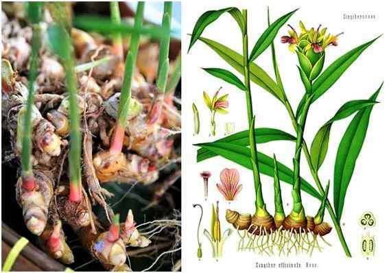

Jahe (Zingiber officinale), adalah tumbuhan yang rimpangnya sering digunakan sebagai rempah-rempah dan bahan baku pengobatan tradisional. Rimpangnya berbentuk jemari yang menggembung di ruas-ruas tengah. Rasa dominan pedas yang dirasakan dari jahe disebabkan oleh senyawa keton bernama zingeron.
jahe termasuk dalam famili Zingiberaceae Karakteristik tanaman jahe antara lain memiliki akar serabut, Batang tanaman jahe beruas-ruas yang menyalar di bawah tanah, Batang jahe berupa umbi untuk menyimpan cadangan makanan (rhizoma), Daun tanaman jahe panjang dengan tulang daun sejajar, Sampai saat ini bermacam olahan jahe telah diproduksi dalam bentuk produk jadi (misal: sirup, bubuk instan, kapsul dan tablet) maupun produk setengah jadi (misal: ekstrak minyak, kosmetik dan farmasi)
Rimpang Jahe (Zingiber rhizoma) merupakan tanaman suku Zingiberaceae yang digunakan sebagai bahan baku dalam industri jamu dan obat di Indonesia karena berkhasiat antara lain karminatif.
Mawar

Tanaman hias yang indah dengan bunga berwarna-warni dan aroma yang harum.
Kaktus

Tanaman yang tahan kekeringan dan cocok untuk ditanam di daerah gersang. Tidak memerlukan perawatan yang intensif.
Monstera

Tanaman hias dengan daun yang unik dan menarik. Dapat tumbuh dengan baik di tempat yang teduh dan lembap.